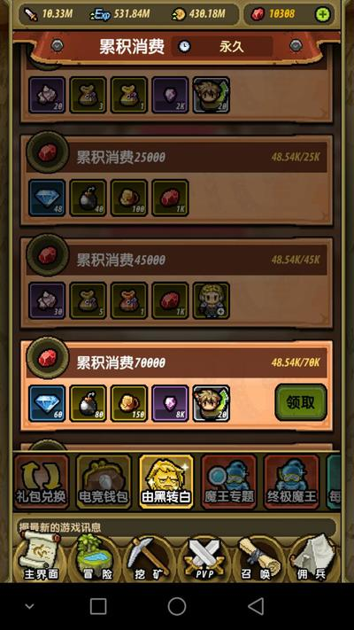
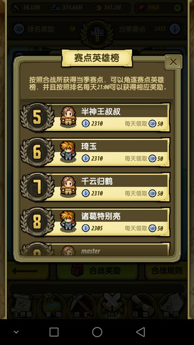
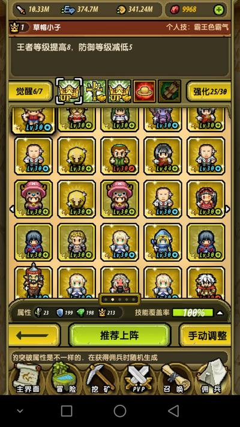
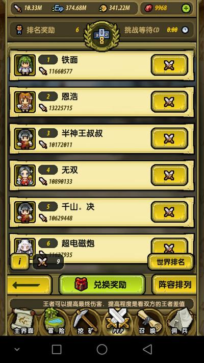

我是一名标准的月卡党，刚刚出的贞德。竞技场一般都可以进前10。排名在我前面的大部分都是贝尔哈迪斯级别的。魔吕级别的基本打不过我了。
|

|

|

|

|
1、开局拿到草泥马和神张，对前期帮助比较大。但是也没有那么大。至少前2周我都是排名50开外的。而且因为只是月卡党，16金的任务我只达到9金。闪金任务我也没有全部完成。现在排名改成4周，月卡党一定要想办法混到金包，这个对于前期的战力影响很大。
2、圣诞节的8700事件。其实这个也不算是大事。那次主要还是为了乔巴。虽然我拿到了8700，但是实际上我的血钻从来没有低于过10000。当然这还是让我提前出了贞德。不过没贞德之前我也是这个排名。对我影响并不大。
3、宙斯换神关羽那次的活动。我记得我是5个宙斯，两个其他，神殿换到的鸣人。所以我可以算是最大化的赚取了碎片。。不过也就15000而已。算不上什么。
4、电竞3基，我是40抽拿到的。这个是最欧的一次，不过也就谨此一次。
5、某次秘书出的船首图腾，加上合战换的，所以我才有2只。
6、补偿牛奶的时候顺手送的那个闪金包，我开的是骑士王，不过也不是很要紧，因为当时我已经是3个骑士王了
但是也是因为以上几点，我的各种过图包，2连3连书，大概只开出了3-4个金或者闪金，而且都是辣鸡。都是辣鸡！
草帽小子，那次活动进神殿的时候，48000换的。
2个大明李提都，都是合战换的。
3个普京。2W左右神殿换了2个，合成1个。
船首图腾，上面已经说了，秘书1个合战1个。
zero，神殿23400换的，在我基本成型之后才刷出来，然后立马合成了2个，当然现在都要下了。
骑士王，神殿36000左右换了2个，合成1个。
2乔巴，100抽一个，活动进神殿的时候换了一个。
狂3我不记得了。不过为了贞德2段，我是在神殿里36000换了一个。。
所以说大部分卡片都是靠努力得来的。
1、头一个月，没得说，有什么上什么，尽量堆先攻，战力先攻是王道。
2、一个月的活动结束之后，可以考虑开始稳定你的流派了。是先爆，防王，还是恢复。你的卡组就要逐渐往流派上靠拢。我是恢复流的，虽然我有朱雀，有草泥马，有炮姐。但是，该下的就下。宁愿上个亚瑟，也不要炮姐。很多人就是舍不得这些卡，导致自己变成了XJBL。神殿换卡也是，不要看到炮姐就拿，你想过她适合你吗？这里还是推荐月卡党玩恢复流。恢复流虽然上限比其他流派低，但是投入小，PK，矿区，合战都有优势，想要低消费高排名只能是恢复。
3、前期，只要秘书合适，每周一次40抽还是很有必要的。因为你阵容还没成型，对各种卡的需求量都有。40抽保底金，最差也是换碎片。没必要为了100抽 150抽去攒。像我这种成型的，才可以攒血钻等活动。
4、刚转型肯定是被各种吊打的。但是一定要坚持。反正你进不了前10，那么前50就没有任何区别。放宽点前100也没太大差距。而转型好了以后，打合战的收益，远大于每天多那一朵小花。
5、契约石要留给永久闪金将。闪金的2段属性比金的2段多太多了。这一点，恢复流比较尴尬。开放2段的将里面，桃园3人是永久的，狂3是永久的。但是桃园3人只有刘备的2段还可以。。所以我现在4个2段，是刘备，狂3，普金，贞德。再来契约石就只能张飞关羽了。
说了这么多，最重要的还是，你的卡要往你的流派靠拢。千万不要上一堆骑士王、电磁炮少女、梦魇狂三，看着很华丽，但是一点用都没有。